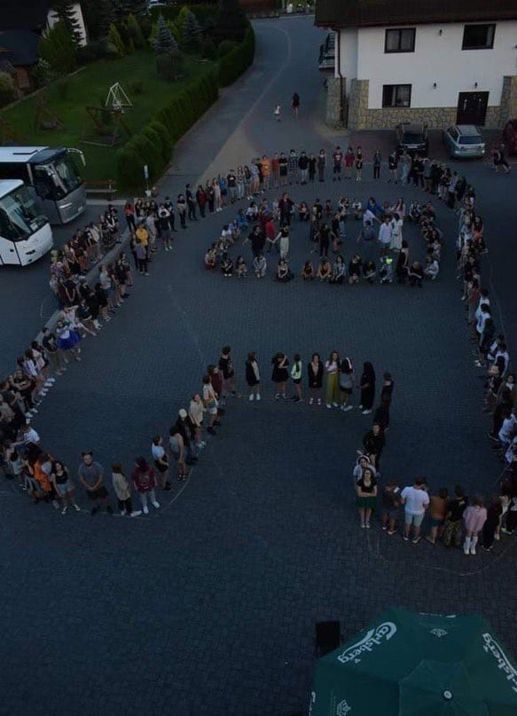

Hola pendejas,como andan?,yo se que el estilo nuevo no es el mejor,pero es mejor que la caca con nombre que tenia ayer,bueno a lo que voy,ayer encontre uno de los mejores memes que me eh encontrado miren:

(Igual si se ve bien fea perdon xd)
Entoces prosigamos,ahora que vimos un momo legendario(+1000 papu :V) veamos que mierda es el responsive desing:
Primeramente segun casi todos
el responsive desing es un concepto en el cual adaptamos el contenido de la pagina a el tamaño del dispoasitivo de consumo,lo cual suena bien,facil,sencillo,pero en la practica para nada lo es , si tuviera que describir mi experiencia con responsive
desing seria:estresante,ya que no tengo mucha practica,toma demasiado tiempo adaptar eso a una pagina web ya hecha,etc....
Bueno dejemos de lado eso y veamos lo que me llevo a crear paginas web:primero estaba en discord(link de mi discord
en la parte superior) y note que muchos servers tenian bot propios,como me intereso busque como hacer mi propio bot de discord,ahi me salio un tutorial de discord.js obviamente en ese tiempo no sabia nada de eso asi que a los minutos busque un
tutorial de js y me salio un curso en el cual enseñaban js que lo creo Soy Dalto,apenas entrar unos minutos me dijo que tenia que haber visto el curso de html y css obviamente que los estoy viendo(digo
viendo por que todavia no termino el de css)y de aqui surgio fer-site.
Historia muy hermosa y todo pero ya no escribo mas por hoy,adios idiotas!